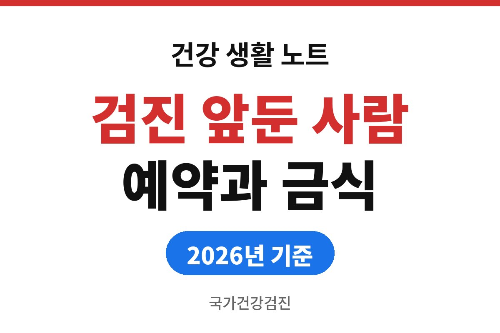
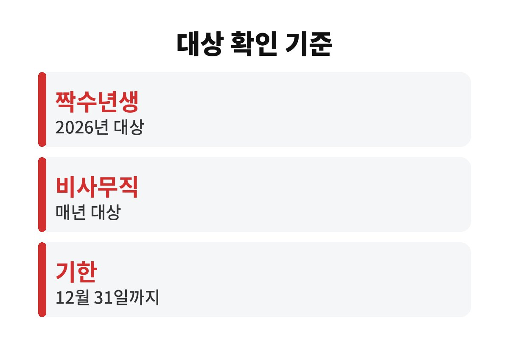
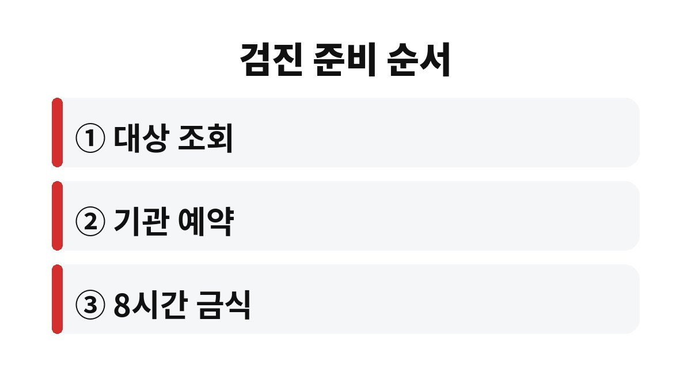

국가건강검진은 대상 조회, 기관 예약, 검진 전 8시간 이상 금식 세 가지만 챙기면 준비가 끝난다.
2026년 11월 현재 올해 검진은 12월 31일까지 받아야 하는 경우가 대부분이어서 연말에 예약이 몰리기 전에 움직이는 편이 낫다.
국민건강보험공단이 안내하는 대상 기준과 검진 기관에서 공통으로 요구하는 준비 사항을 순서대로 적었다.
일반검진은 건강보험 가입자와 피부양자 가운데 만 20세 이상이 대상이다.
다만 모두가 매년 받는 것은 아니다.
지역가입자와 사무직 직장가입자는 출생연도가 짝수인 해에 받고, 비사무직 직장가입자는 매년 받는다.
2026년은 짝수 해라서 짝수년생이 해당된다.
내가 대상인지는 국민건강보험공단 홈페이지나 The건강보험 앱의 검진 대상 조회 화면에서 확인한다.
일반검진 외에 암검진 대상 여부도 함께 표시되는 경우가 있어 두 가지를 같이 본다.
주민등록상 출생연도와 건강보험 가입 유형이 맞는지부터 보면 헷갈릴 일이 줄어든다.
가족이 함께 가입된 경우에는 세대원마다 대상 여부가 다르게 나올 수 있다.
부부라도 출생연도의 홀짝이 다르면 한 사람은 올해, 다른 한 사람은 내년에 받는 일이 흔하다.
이럴 때는 날짜를 맞추려고 무리하게 같은 날 예약하기보다 각자 조회 결과대로 움직이는 쪽이 번거로움이 적다.
| 구분 | 검진 주기 | 확인할 곳 |
|---|---|---|
| 사무직 직장가입자·지역가입자 | 2년에 1번, 출생연도가 짝수인 해 | 공단 홈페이지·앱 |
| 비사무직 직장가입자 | 매년 1번 | 사업장 안내·공단 조회 |
| 2026년 검진 기한 | 2026년 12월 31일까지 | 검진 기관 예약 현황 |

표에 적은 기한은 대상자로 조회되는 사람에게 해당하는 기준이다.
대상이 아닌 해에 받으면 검진 비용 전액을 내야 하는 경우가 많으므로 예약 전에 조회부터 하는 것이 순서다.
검진 기관마다 추가 검사를 권하기도 하는데, 이 추가분은 본인 부담이라 신청 전에 항목과 금액을 물어본다.
기한을 넘기면 올해분 검진은 공단 부담으로 받을 수 없다는 안내가 일반적이다.
12월에는 평일 오전 시간대가 먼저 차는 기관이 많다는 이야기를 자주 듣는다.
나는 11월 안에 예약을 끝내는 쪽을 택한다.
검진 준비는 복잡하지 않지만 순서가 뒤바뀌면 날짜를 다시 잡아야 한다.
대상 조회가 맨 앞에 오고 금식이 맨 뒤에 온다고 생각하면 편하다.

금요일 오후에 급하게 예약해 놓고 점심을 먹은 채 도착하면 접수 단계에서 금식 여부를 묻는다.
금식이 지켜지지 않으면 혈당과 지질 수치가 흔들려 검사 순서가 밀리거나 날짜를 다시 잡으라는 안내를 받을 수 있다.
혈압약이나 당뇨약은 종류마다 안내가 달라서 내 판단으로 끊거나 먹지 않는다.
기관 안내와 처방한 의사의 말이 다르면 처방한 병원에 먼저 묻는 편이 안전하다.
결과는 검진 기관의 안내에 따라 우편이나 앱, 홈페이지로 전달된다.
예약할 때 통보 방식을 한 번 묻고 주소나 연락처가 바뀌었다면 접수 때 고쳐 둔다.
결과표를 못 받아 몇 주를 흘려보내면 경계 판정을 확인할 시기도 같이 늦어진다.
검진은 받는 날보다 예약하는 날이 더 급하다.
결과표가 오면 공복혈당과 혈압 수치부터 열어 보고, 경계나 의심 판정이 있으면 결과표를 들고 내과를 찾는다.
검진을 기다리는 사이에 가슴 통증이나 심한 두통처럼 평소와 다른 증상이 생기면 검진 일정과 상관없이 바로 진료를 받는다.
참고 자료: 국민건강보험공단 「건강검진 대상자 조회·검진 안내」(2026년 11월 확인)
※ 2026년 기준 공식 기준을 바탕으로 정리한 일반 건강 정보이며, 증상이 계속되거나 지병이 있다면 전문의와 상담하길 바란다.